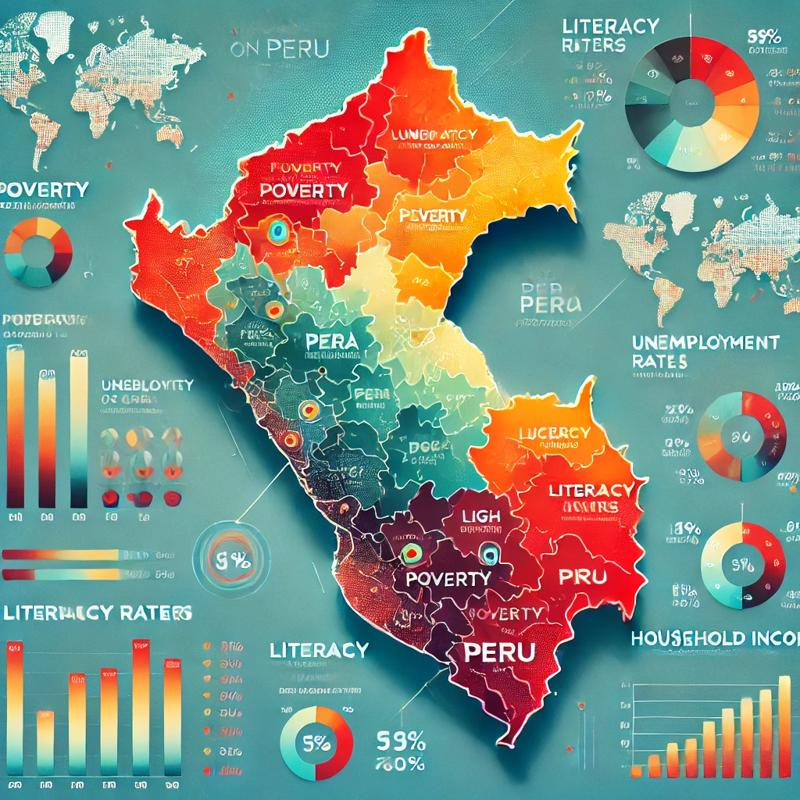

I applied advanced data cleaning, analysis, and visualization techniques, identifying key patterns of poverty and inequality. I used Python and Tableau to transform large volumes of data into actionable insights, optimizing socioeconomic analysis in different regions of the country.


Este proyecto consistió en limpiar, transformar y analizar datos del mercado inmobiliario de Nashville utilizando PostgreSQL para asegurar la calidad y consistencia de la información. Implementé técnicas avanzadas de manejo de datos, como estandarización de fechas, partición de columnas, eliminación de duplicados y actualización de valores faltantes. Posteriormente, exporté los datos limpios y los visualicé en Tableau, creando dashboards interactivos para analizar tendencias de precios, distribución geográfica y tipos de propiedades.
Este proyecto es un análisis de datos en SQL sobre mortalidad y vacunación global relacionadas con el COVID-19 entre 2020 y 2024. Incluye la creación y carga de tablas de datos, cálculos de tasas de mortalidad y vacunación, y comparaciones por país, región y periodos. El análisis culmina en la preparación de datos para visualización, proporcionando insights claros sobre la evolución de la pandemia y el avance en la vacunación mundial.

Este proyecto utiliza análisis de datos médicos para identificar factores de riesgo y predecir enfermedades cardíacas. A través de herramientas como Python, Pandas y Seaborn, se procesaron y limpiaron datos, calculando el IMC para clasificar el sobrepeso y normalizando variables como colesterol y glucosa. Se realizó un análisis exploratorio visualizando correlaciones entre variables clave como peso, actividad física y tabaquismo, destacando su impacto en la salud cardiovascular. Este análisis permite identificar los factores más relevantes para la prevención de enfermedades cardíacas.
Este proyecto analiza datos cinematográficos entre 1980 y 2020 para identificar los factores que influyen en los ingresos brutos de las películas. Usando Python (pandas, numpy, seaborn, matplotlib), se realizó un análisis de correlación que reveló que el presupuesto y los votos son los factores más influyentes en los ingresos brutos. Además, se desarrolló un dashboard interactivo en Tableau para visualizar indicadores clave como el ROI, presupuesto e ingresos brutos.

Este proyecto, analizado utilizando Python, explora cómo factores como la educación, ocupación y lugar de origen influyen en los ingresos globales. Destaca que el 46.54% de las personas con educación avanzada ganan más de $50,000, frente al 17.37% sin este nivel educativo. Irán lidera con el mayor porcentaje de altos ingresos (41.86%), y en India, los profesionales especializados predominan en este grupo. Mediante técnicas avanzadas de análisis de datos con Python, el estudio identifica patrones clave, revelando cómo la educación y la demografía afectan las oportunidades económicas a nivel global..
El proyecto "Análisis Integral de la Pobreza en Perú: Un Estudio de 2019", se centra en un análisis exhaustivo de la pobreza en Perú durante el año 2019. Utiliza técnicas de ciencia de datos para explorar diversas variables relacionadas con la pobreza, como ingresos, empleo y estratificación socioeconómica. El análisis incluye la visualización de datos y la evaluación de indicadores clave, buscando identificar patrones y correlaciones que puedan contribuir a una mejor comprensión de la situación de la pobreza en el país. Este trabajo es fundamental para formular políticas más efectivas y orientadas a la reducción de la pobreza.